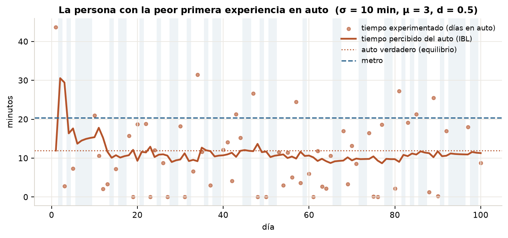
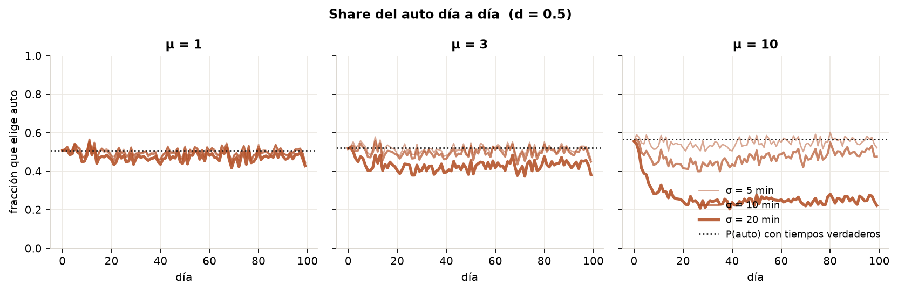
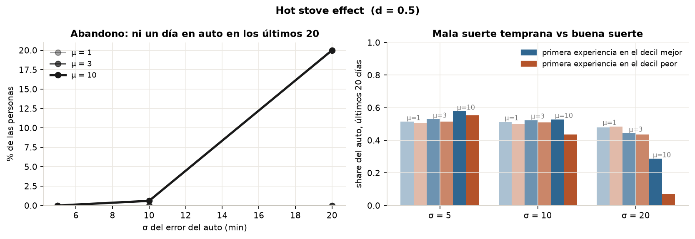
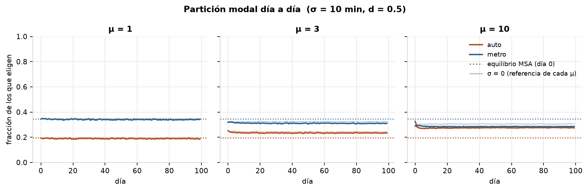
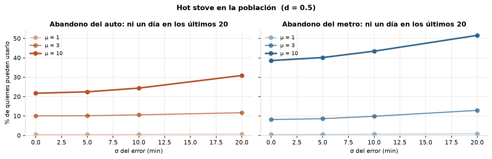
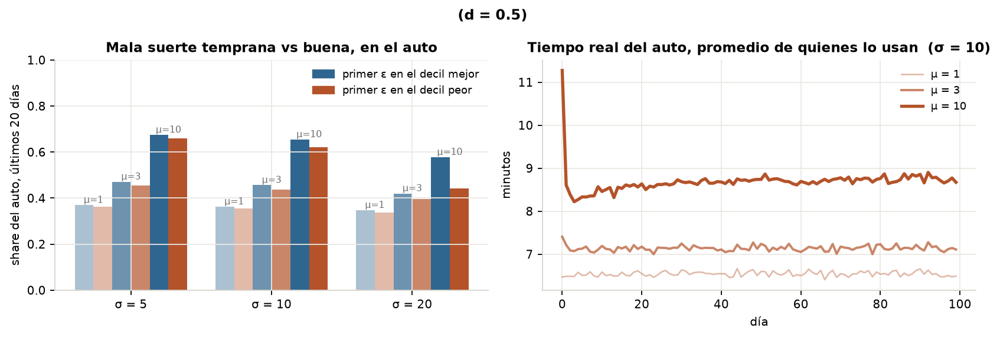

Un simulador paralelo al MSA: en vez de resolver un punto fijo, la gente elige cada día con el tiempo que cree que tarda cada modo, lo experimenta con un error propio, y aprende por instancias (IBL). Se busca el hot stove effect: quien tuvo una mala experiencia temprana deja de probar la alternativa que en media le conviene.
El simulador resuelve la partición modal como un punto fijo:
el MSA itera hasta que los tiempos de la BPR y el logit son consistentes. No
hay días, ni memoria, ni experiencia. El documento
(new_simulator/IBL Leandro.docx) pide reemplazar eso por una
dinámica día a día:
Es un modelo de dinámica y no de equilibrio; ese cambio de naturaleza ordena todo lo demás. Se construyó en dos fases, cada una verificable sola, como sandbox que reutiliza el núcleo sin tocarlo:
| fase | archivo | qué hace |
|---|---|---|
| IBL | ibl.py · test_ibl.py | Las dos ecuaciones del documento, vectorizadas, con seis tests de respuesta conocida. |
| 0 | persona.py | Una persona elige entre auto y metro 100 días, con tiempos verdaderos fijos (los del equilibrio MSA en su celda) y ε sobre el auto. 500 réplicas por combinación de parámetros. |
| 1 | poblacion.py | Los 29.008 agentes del equilibrio MSA eligen cada día; los flujos cargan la red (resolver_oferta); ε sobre auto y metro. 100 días. |
bni(t) es el tiempo que la persona
n percibe para el modo i al decidir en el día t;
xi(t′) el que experimentó en t′;
ani(t′) = 1 si ese día eligió i;
d ≥ 0 la tasa de decaimiento. Con
d = 0 es el promedio simple de lo vivido; con
d grande sólo cuenta lo reciente. En
ibl.py se implementa tal cual, sobre matrices
(personas, días, modos).
Si la persona nunca eligió i, la suma de (2) es vacía y la fórmula
da 0/0. Se resuelve tratando la información exógena del día 1 como
una instancia más: en t′ = 0
todos los modos tienen a = 1 y x
igual al tiempo de equilibrio. Así el prior decae con d
como cualquier experiencia, y bni queda
definido siempre. Es un supuesto; está en ibl.py y lo fija
test_un_modo_nunca_elegido_da_peso_cero_no_nan.
ε ~ N(0, σ), i.i.d. por persona y día, como pide el documento: normal con media y varianza paramétricas. La media es cero. No se trunca en flujo libre, y no es un detalle: en el caso de la fase 0 el auto en equilibrio (12,0 min) está a 0,8 min del flujo libre (11,2), así que truncar por abajo sesga la media experimentada varios minutos hacia arriba. Con una ventaja real del auto de 0,8 min, ese sesgo vuelca a todos y parece hot stove sin serlo — medido: «cree que el auto es peor» ≈ 100 % en las 27 combinaciones de la primera corrida. Se sacó el truncamiento; sólo se impide un tiempo negativo.
La elección es el logit del núcleo con una escala
μ sobre las utilidades antes del softmax:
Pi ∝ exp(μ·Vi). Con
μ = 1 es exactamente probabilidades_logit.
Se barre μ porque la escala decide si el efecto se
ve: en la figura 6.b del paper de Henríquez-Jara y Guevara la elección es casi
determinista (βRU = 20).
La utilidad de cada modo la calcula calcular_utilidades, la del
simulador. En la fase 0 se la llama por día con el tiempo percibido en lugar
del observado. En la fase 1, con 29.008 personas, eso sería lento en Python;
pero la utilidad es lineal en el tiempo de viaje,
V = … + btiempo_viaje·t, así que se la
llama una vez por grupo (estrato, celda, tiene_auto: 1.108
grupos) con los tiempos del día 0 —Vref—
y la utilidad de cada persona cada día es
Todo lo que cambia día a día vive en bni; las constantes modales, el costo, las penalizaciones y la factibilidad quedan tal como las calcula el núcleo. Es el mismo criterio del proyecto: la matemática vive en Python y no se copia.
ε en auto y metro. En el auto sobre el tiempo total; en el metro sobre el tiempo en vehículo, que es el que pesa btiempo_viaje (espera y acceso quedan en Vref). Bici y caminata no tienen ε y su utilidad queda congelada en el día 0: sus penalizaciones por umbral no son lineales en el tiempo y no son el objeto del documento; sus flujos sí cargan la red cada día. Teletrabajadores fuera: no eligen.
La primera corrida fue el estrato Alto a 5 km del CBD: auto 10,4 min, metro 25,7. Ahí el auto gana por 1,2 útiles, que a btiempo_viaje = −0,0331 son 36 minutos equivalentes, y ningún shock razonable lo da vuelta: hot stove cero en las 27 combinaciones. El efecto vive donde las alternativas compiten, como en la figura del paper. Se barrieron todas las celdas y estratos:
| estrato | km | auto (min) | metro (min) | Vauto | Vmetro | ventaja del auto |
|---|---|---|---|---|---|---|
| Alto | 5,0 | 10,4 | 25,7 | −0,635 | −1,837 | +36 min eq. |
| Medio | 5,8 | 12,0 | 20,3 | −1,355 | −1,382 | +0,8 min eq. |
| Bajo | 1,2 | 2,8 | 19,7 | −1,540 | −1,632 | +2,8 min eq. |
Tiempos del equilibrio MSA de la app, sólo auto y metro habilitados. El caso es el Medio a 5,8 km: P(auto | μ = 1) = 0,507, indiferencia casi exacta.

| σ (min) | μ | P(auto) verdadera | share final | abandono | final · mala suerte | final · buena suerte |
|---|---|---|---|---|---|---|
| 5 | 1 | 0,507 | 0,504 | 0 % | 0,51 | 0,51 |
| 5 | 10 | 0,567 | 0,561 | 0 % | 0,55 | 0,58 |
| 10 | 1 | 0,507 | 0,499 | 0 % | 0,50 | 0,51 |
| 10 | 10 | 0,567 | 0,502 | 0,6 % | 0,44 | 0,53 |
| 20 | 1 | 0,507 | 0,477 | 0 % | 0,49 | 0,48 |
| 20 | 3 | 0,520 | 0,439 | 0 % | 0,44 | 0,44 |
| 20 | 10 | 0,567 | 0,255 | 20 % | 0,07 | 0,29 |
d = 0,5. Las 27 combinaciones están en salida/persona.json. El
decaimiento mueve poco: con σ = 20 y μ = 10 el abandono va de 17 % (d = 0) a 25 % (d = 1).


Con la escala del logit del simulador (μ = 1) el aprendizaje es autocorrectivo: una mala percepción baja la probabilidad del auto, pero no la anula, la persona lo vuelve a probar y la percepción se arregla. El efecto que describe el documento exige que una mala percepción bloquee la exploración, y eso pasa recién con μ ≈ 10, que es el orden de la figura del paper. Es una decisión de calibración, no un hecho del modelo, y hay que declararla al presentar cualquier número.
Todo el mundo aprende a la vez y la red responde: los flujos de cada día
cargan la BPR del auto, la frecuencia del metro y la ciclovía
(resolver_oferta, el mismo código que usa el MSA), y el tiempo que
cada persona experimenta es el real de ese día en su celda más su ε. Los
tiempos del día 0 son los del equilibrio MSA de la app; la población también.
Sin ruido y con el logit del núcleo, el loop día a día reproduce la partición del MSA: auto 19,3 % contra 19,4 %, metro 34,5 % contra 34,6 %, y el tiempo real del auto 6,50 min. El acoplamiento IBL + oferta tiene al punto fijo del simulador como caso particular, que es lo que tenía que pasar.
Cambiar μ cambia el modelo de elección, y por lo tanto su equilibrio: con μ = 10 y sin ruido el auto sube a 28,9 % y su tiempo real a 8,8 min, porque el logit nítido manda al auto a todos los que lo prefieren por poco. Comparar μ = 10 contra el MSA mezclaría ese efecto con el del aprendizaje. Por eso la referencia de cada μ es la misma dinámica con σ = 0, y el hot stove se mide como delta respecto de ella.
| μ | auto (σ = 0) | metro (σ = 0) | abandono auto | abandono metro | t real del auto |
|---|---|---|---|---|---|
| 1 | 19,3 % | 34,5 % | 0,5 % | 0,5 % | 6,50 min |
| 3 | 24,4 % | 32,3 % | 10,1 % | 8,2 % | 7,13 min |
| 10 | 28,9 % | 30,5 % | 21,8 % | 38,6 % | 8,79 min |
Las referencias σ = 0, d = 0,5, últimos 20 días. El «abandono» con σ = 0 no es hot stove: es gente que con un logit nítido nunca elige el modo que le conviene menos. Lo que cuenta es cuánto sube con σ.

| σ | μ | Δ share auto | Δ share metro | Δ abandono auto | Δ abandono metro | auto final · mala vs buena suerte | Δ bienestar |
|---|---|---|---|---|---|---|---|
| 10 | 1 | −0,5 pp | −0,6 pp | +0,0 pp | +0,2 pp | 0,35 vs 0,36 | −0,0003 |
| 10 | 3 | −1,0 pp | −1,4 pp | +0,5 pp | +1,7 pp | 0,44 vs 0,46 | +0,0003 |
| 10 | 10 | −1,3 pp | −2,2 pp | +2,6 pp | +4,8 pp | 0,62 vs 0,65 | +0,0015 |
| 20 | 1 | −1,3 pp | −2,0 pp | +0,2 pp | +0,3 pp | 0,34 vs 0,35 | −0,0017 |
| 20 | 3 | −3,0 pp | −4,4 pp | +1,6 pp | +4,7 pp | 0,40 vs 0,42 | −0,0033 |
| 20 | 10 | −5,0 pp | −6,8 pp | +9,1 pp | +13,0 pp | 0,44 vs 0,58 | +0,0001 |
Deltas respecto de σ = 0 con la misma μ, d = 0,5, últimos 20 días. «Bienestar»
es la utilidad verdadera media del modo elegido, en útiles, con los
tiempos reales de cada día. Las 36 combinaciones están en salida/poblacion.json.


1. La pérdida de share de los modos ruidosos ocurre incluso con μ = 1, donde no hay abandono. Eso no es hot stove: es la asimetría del aprendizaje. Sólo se actualiza el modo que se usó, y una experiencia mala aleja más de lo que una buena acerca, así que auto y metro pierden 1 a 2 puntos frente a bici y caminata, que no tienen ε. Con σ igual en los dos modos ruidosos el efecto es simétrico entre ellos.
2. El hot stove propiamente tal —abandono, y mala suerte temprana que persiste— aparece con μ = 3 y es grande con μ = 10. El metro sufre más que el auto, porque está más cerca de la indiferencia para más gente.
3. El bienestar agregado casi no cambia, y con μ = 10 no baja. Es un resultado de sistema que la fase 0 no podía mostrar: el logit nítido sobrecarga el auto, el ruido saca gente de él, la congestión baja y eso compensa el error individual. Un hot stove que a nivel de persona es una pérdida puede ser neutro a nivel de ciudad.
cd sandbox/ibl-dia-a-dia
uv sync --extra dev --reinstall-package titirilquen-core # el núcleo actual, no el cacheado
uv run pytest # las propiedades del IBL
uv run python persona.py # fase 0: salida/persona.json (~12 s)
uv run python figuras.py
uv run python poblacion.py # fase 1: salida/poblacion.json (~4 min)
uv run python figuras_poblacion.py
Determinista con seed 42. Los tiempos verdaderos y la población
salen de run_msa con la configuración web de
tests/test_linea_base.py; si la línea base cambia, cambian.
new_simulator/IBL Leandro.docx — el pedido, con las ecuaciones (1) y (2) y la figura 6.b de Henríquez-Jara & Guevara (2025), Journal of Choice Modelling 55, 100552.